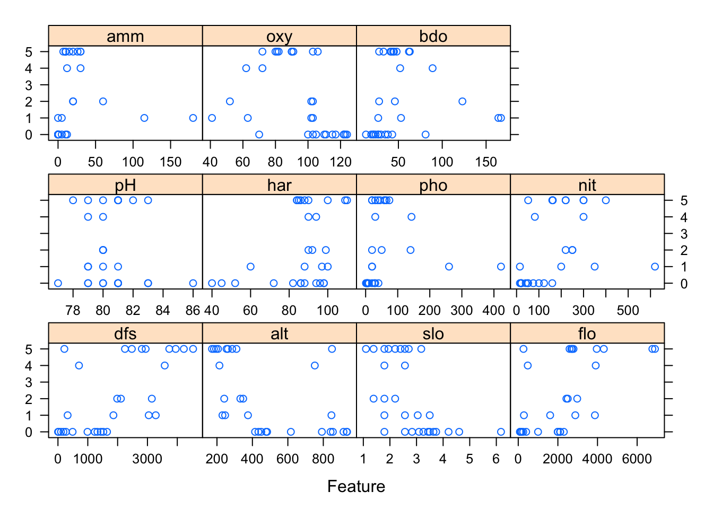
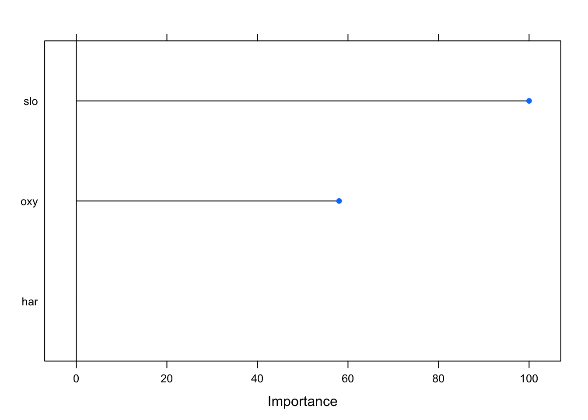

In classical linear regression we make predictions of the expected value of a response variable as a function of the linear sum of covariates (also known as independent, explanatory or predictor variables). Generalised Linear Modelling (GLM) relaxes the constraint that ordinary linear regression has, in that the response variable must be normally distributed.
Why is the GLM useful for ecology problems? Often in ecology the response variable is in the form of counts or a presence v absence, and in general the response variable exhibits a mean-variance relationship that is not normally distributed.
The response variable is a linear sum of the predictor variables
There is a linear relationship between a function g (the link function ) of the mean of the response variable, and the predictor variables. This function is used to transform the non-linear relationship to a linear one. There are a number of different link functions for each response variable distribution.
More detail on the mathematical basis for the GLM, and associated link functions, can be found here1.
As in the Data Analysis vignette (link) we will be using the doubs2 dataset to undertake a GLM exercise. Here the response is count data for river fish species across 30 sites, so is likely to be a Poisson distribution. The covariates are a number of measurements of water chemistry and physical characteristics at each of the 30 sites.
#Let's load the data
data(doubs)
# Set-up species data
species <- doubs$fish
# Set-up environmental data
environ <- doubs$envWe can get a quick overview of the response data (species counts at each of the 30 site) set using the skimr library:
# Look at the data - drop the site column
skim(species)| Name | species |
| Number of rows | 30 |
| Number of columns | 27 |
| _______________________ | |
| Column type frequency: | |
| numeric | 27 |
| ________________________ | |
| Group variables | None |
Variable type: numeric
| skim_variable | n_missing | complete_rate | mean | sd | p0 | p25 | p50 | p75 | p100 | hist |
|---|---|---|---|---|---|---|---|---|---|---|
| Cogo | 0 | 1 | 0.50 | 0.94 | 0 | 0 | 0.0 | 0.75 | 3 | ▇▁▁▁▁ |
| Satr | 0 | 1 | 1.90 | 2.04 | 0 | 0 | 1.0 | 3.75 | 5 | ▇▁▂▁▃ |
| Phph | 0 | 1 | 2.27 | 1.98 | 0 | 0 | 3.0 | 4.00 | 5 | ▇▁▂▅▂ |
| Neba | 0 | 1 | 2.43 | 1.92 | 0 | 1 | 2.0 | 4.00 | 5 | ▇▂▂▂▅ |
| Thth | 0 | 1 | 0.50 | 1.01 | 0 | 0 | 0.0 | 0.75 | 4 | ▇▂▁▁▁ |
| Teso | 0 | 1 | 0.63 | 1.30 | 0 | 0 | 0.0 | 0.75 | 5 | ▇▁▁▁▁ |
| Chna | 0 | 1 | 0.60 | 0.86 | 0 | 0 | 0.0 | 1.00 | 3 | ▇▃▁▂▁ |
| Chto | 0 | 1 | 0.87 | 1.31 | 0 | 0 | 0.0 | 2.00 | 4 | ▇▁▂▁▁ |
| Lele | 0 | 1 | 1.43 | 1.50 | 0 | 0 | 1.0 | 2.00 | 5 | ▇▃▂▁▁ |
| Lece | 0 | 1 | 1.87 | 1.36 | 0 | 1 | 2.0 | 3.00 | 5 | ▇▅▃▂▁ |
| Baba | 0 | 1 | 1.43 | 1.76 | 0 | 0 | 0.0 | 3.00 | 5 | ▇▂▂▂▁ |
| Spbi | 0 | 1 | 0.90 | 1.40 | 0 | 0 | 0.0 | 1.00 | 5 | ▇▁▁▁▁ |
| Gogo | 0 | 1 | 1.83 | 1.84 | 0 | 0 | 1.0 | 3.75 | 5 | ▇▂▁▂▂ |
| Eslu | 0 | 1 | 1.33 | 1.52 | 0 | 0 | 1.0 | 2.00 | 5 | ▇▁▁▁▁ |
| Pefl | 0 | 1 | 1.20 | 1.54 | 0 | 0 | 0.5 | 2.00 | 5 | ▇▂▁▁▁ |
| Rham | 0 | 1 | 1.10 | 1.65 | 0 | 0 | 0.0 | 2.00 | 5 | ▇▁▂▁▁ |
| Legi | 0 | 1 | 0.97 | 1.40 | 0 | 0 | 0.0 | 1.75 | 5 | ▇▁▁▁▁ |
| Scer | 0 | 1 | 0.70 | 1.15 | 0 | 0 | 0.0 | 1.00 | 5 | ▇▂▁▁▁ |
| Cyca | 0 | 1 | 0.83 | 1.34 | 0 | 0 | 0.0 | 1.00 | 5 | ▇▁▁▁▁ |
| Titi | 0 | 1 | 1.50 | 1.74 | 0 | 0 | 1.0 | 3.00 | 5 | ▇▁▁▂▁ |
| Abbr | 0 | 1 | 0.87 | 1.53 | 0 | 0 | 0.0 | 1.00 | 5 | ▇▁▁▁▁ |
| Icme | 0 | 1 | 0.60 | 1.30 | 0 | 0 | 0.0 | 0.00 | 5 | ▇▁▁▁▁ |
| Acce | 0 | 1 | 1.27 | 1.89 | 0 | 0 | 0.0 | 2.00 | 5 | ▇▁▁▁▂ |
| Ruru | 0 | 1 | 2.10 | 2.20 | 0 | 0 | 1.0 | 5.00 | 5 | ▇▂▁▁▅ |
| Blbj | 0 | 1 | 1.03 | 1.71 | 0 | 0 | 0.0 | 1.75 | 5 | ▇▁▁▁▁ |
| Alal | 0 | 1 | 1.90 | 2.25 | 0 | 0 | 0.0 | 5.00 | 5 | ▇▂▁▁▅ |
| Anan | 0 | 1 | 0.90 | 1.45 | 0 | 0 | 0.0 | 1.75 | 5 | ▇▂▁▁▁ |
We can see that there are 27 species, with no missing data. Some are more numerous than others, but it doesn’t seem like the data are overdisperesed. It’s clear from the simplified histrogram column that species counts are not nomrally distributed, and that a Poisson distribution would be a good fit for response variable data.
Similarly the covariate dataset:
# Look at the data - drop the site column
skim(environ)| Name | environ |
| Number of rows | 30 |
| Number of columns | 11 |
| _______________________ | |
| Column type frequency: | |
| numeric | 11 |
| ________________________ | |
| Group variables | None |
Variable type: numeric
| skim_variable | n_missing | complete_rate | mean | sd | p0 | p25 | p50 | p75 | p100 | hist |
|---|---|---|---|---|---|---|---|---|---|---|
| dfs | 0 | 1 | 1879.03 | 1396.51 | 3.0 | 544.50 | 1752.00 | 3017.25 | 4530.00 | ▇▅▅▅▃ |
| alt | 0 | 1 | 481.50 | 271.39 | 172.0 | 248.00 | 395.00 | 782.00 | 934.00 | ▇▃▂▁▅ |
| slo | 0 | 1 | 2.76 | 1.08 | 1.1 | 1.83 | 2.56 | 3.39 | 6.18 | ▆▇▅▂▁ |
| flo | 0 | 1 | 2220.10 | 1810.19 | 84.0 | 420.00 | 2210.00 | 2857.50 | 6900.00 | ▇▇▃▁▁ |
| pH | 0 | 1 | 80.50 | 1.74 | 77.0 | 79.25 | 80.00 | 81.00 | 86.00 | ▁▇▆▂▁ |
| har | 0 | 1 | 86.10 | 16.87 | 40.0 | 84.25 | 89.00 | 96.75 | 110.00 | ▂▁▁▇▃ |
| pho | 0 | 1 | 55.77 | 87.64 | 1.0 | 12.50 | 28.50 | 56.00 | 422.00 | ▇▁▁▁▁ |
| nit | 0 | 1 | 165.40 | 141.34 | 15.0 | 50.50 | 160.00 | 242.50 | 620.00 | ▇▆▂▁▁ |
| amm | 0 | 1 | 20.93 | 37.91 | 0.0 | 0.00 | 10.00 | 20.00 | 180.00 | ▇▁▁▁▁ |
| oxy | 0 | 1 | 93.90 | 22.15 | 41.0 | 80.25 | 102.00 | 109.00 | 124.00 | ▂▃▃▇▆ |
| bdo | 0 | 1 | 51.17 | 38.64 | 13.0 | 27.25 | 41.50 | 52.75 | 167.00 | ▇▃▁▁▁ |
We can see that there are no missing data. We can visualise the response data against the covariates using the featurePlot function from the caret library.
featurePlot(x=environ, y= species$Ruru)
With this simple chart we can see how the count for Ruru species is at a maximum for relatively low concentrations for ammonium and phosphate and high values for chalkiness (covariate har) of the river water.
Given the response and covariate datasets we can fit a GLM with the doubs data. We fit the count data for the species Ruru against all environmental covaraites, usung a Poisson distribution. A response variable that is Poisson distributed usually uses a log link function. Note, we know from the Data Analysis vignette (link) that some covariates within the eviron dataset have significant collinearity, so the model results may not be ideal.
# Fit GLM to species Ruru - use all environmental covariates to fit the model
ruru_model <- glm(formula = species$Ruru ~ . ,
# Use a Poisson distribution for the response variable
family= poisson(link = "log"),
data = environ)
# Summarise the model fit
summary(ruru_model)##
## Call:
## glm(formula = species$Ruru ~ ., family = poisson(link = "log"),
## data = environ)
##
## Deviance Residuals:
## Min 1Q Median 3Q Max
## -1.57253 -0.88709 -0.34156 0.08549 2.79357
##
## Coefficients:
## Estimate Std. Error z value Pr(>|z|)
## (Intercept) 2.119e+01 8.809e+00 2.405 0.0162 *
## dfs -4.277e-04 1.537e-03 -0.278 0.7809
## alt -3.473e-03 4.513e-03 -0.770 0.4415
## slo -4.544e-01 3.546e-01 -1.281 0.2000
## flo 7.666e-05 6.587e-04 0.116 0.9074
## pH -1.001e-01 1.297e-01 -0.772 0.4400
## har -9.824e-03 2.253e-02 -0.436 0.6627
## pho -8.443e-03 7.057e-03 -1.196 0.2316
## nit -3.028e-04 4.054e-03 -0.075 0.9405
## amm 1.575e-02 1.903e-02 0.828 0.4079
## oxy -7.058e-02 3.580e-02 -1.971 0.0487 *
## bdo -3.361e-02 1.867e-02 -1.800 0.0718 .
## ---
## Signif. codes: 0 '***' 0.001 '**' 0.01 '*' 0.05 '.' 0.1 ' ' 1
##
## (Dispersion parameter for poisson family taken to be 1)
##
## Null deviance: 81.864 on 29 degrees of freedom
## Residual deviance: 31.361 on 18 degrees of freedom
## AIC: 109.06
##
## Number of Fisher Scoring iterations: 6To understand which covariates have an effect on the response variable, we will look at the p values associated with each covariate in the table above. We can see that the oxy covariate is significant for the Ruru counts. If the p-value < 0.05 then, the covariate has a significant effect on the response variable.
We can also check to see if the model fit is over or under-dispersed by looking at the residual deviance. If the residual deviance is substantially greater than the degrees of freedom, then the model is over-dispersed; the predicted values are correct but the standard deviation are not accounted for by the model. In the model fit above the residual deviance is close to the degrees of freedom, and the dispersion parameter is 31.361/18 = 1.74 (which is small), so the model is a good fit.
The null deviance shows the predicted response when only the intercept (the overall mean) is included in the data. We can see that adding the covariates into the model reduces the null-deviance by around 50. Again, a good sign in terms of the model’s overall suitability.
A general protcol for how to proceed with predictive modelling, for both statistical regression and machine learning techinuqes, is presented below. When fitting a covariates to a model of response data, there are four key steps. In this vignette we will focus on the GLM, but the approach is equally valid for other modelling methods too. The four steps are:
We are going to use the caret package for running model fitting. The package is highly flexible and be used for all Let us look at the relationship between each predictor variable and the response. First we split our data into train and test subsets. Each subset will be further split later on using a method known as k-fold cross validation. This involves splitting a dataset into k-subsets. Each subset is held out while the model is trained on all other subsets. This process is completed until accuracy is determined for each instance in the dataset, and an overall accuracy estimate is provided.
inTrain <- createDataPartition(y = species$Ruru, p = 0.6, list = FALSE)
training <- cbind(environ[inTrain,], y = species$Ruru[inTrain])
testing <- cbind(environ[-inTrain,], y = species$Ruru[-inTrain])Firstly we can use caret to help in identifying which features are the most significant in fitting a glm. We do this with recursive feature elimination as follows:
# Set seed for repeatable randomisation
set.seed(123)
# Specify the control parameters for the RFE
rfe_ctrl <- rfeControl(
# Use a random forest algorithm to to evaluate feature selection
functions = lmFuncs,
# Use 3-fold cross validation
method = "cv",
number = 3,
returnResamp = "final",
verbose = F)
# Perform RFE
rfe <- rfe(
x = within(training, rm(y)),
y = training$y,
# Limit the covariates to no more than 5
sizes= c(1, 3, 5, 8, 11),
rfeControl = rfe_ctrl)
# Let's look at the results
rfe##
## Recursive feature selection
##
## Outer resampling method: Cross-Validated (3 fold)
##
## Resampling performance over subset size:
##
## Variables RMSE Rsquared MAE RMSESD RsquaredSD MAESD Selected
## 1 2.026 0.27340 1.839 0.3155 0.29146 0.1168 *
## 3 2.586 0.13398 2.092 0.4715 0.20683 0.2417
## 5 5.197 0.02429 3.601 3.5952 0.02009 1.9613
## 8 3.227 0.04984 2.693 0.5648 0.07002 0.5175
## 11 9.305 0.16458 7.519 3.0318 0.14307 1.4946
##
## The top 1 variables (out of 1):
## sloWe see that the model with four variables resulted in the lowest root means squared error (RMSE). So now we can proceed to fitting a GLM using the optimum features (covariates).
# Create the formula for the glm
y <- "y"
xs <- rfe$optVariables
form <- as.formula(paste(y, paste(xs, collapse = " + "), sep=" ~ "))
set.seed(1895)
glm_fit <- train(
# Use the formula given the best features from the rfe process
form,
# Select data to train the model on
data = training,
# Select the glm method with the poisson distribution
method = "glm", family = "poisson",
# Cross validation 5-fold, repeated 5 times
trControl = trainControl(
method = "repeatedcv",
number = 5,
repeats = 5))
# What are the important of the covariates in them model?
varImp(glm_fit) %>% plot()## Warning in FUN(newX[, i], ...): no non-missing arguments to max; returning
## -Inf
# Show model fit and covariate significance
summary(glm_fit)##
## Call:
## NULL
##
## Deviance Residuals:
## Min 1Q Median 3Q Max
## -2.5367 -1.5685 -0.4848 1.1401 2.2965
##
## Coefficients:
## Estimate Std. Error z value Pr(>|z|)
## (Intercept) 2.1983 0.5578 3.941 8.11e-05 ***
## slo -0.5746 0.2251 -2.553 0.0107 *
## ---
## Signif. codes: 0 '***' 0.001 '**' 0.01 '*' 0.05 '.' 0.1 ' ' 1
##
## (Dispersion parameter for poisson family taken to be 1)
##
## Null deviance: 48.643 on 18 degrees of freedom
## Residual deviance: 41.581 on 17 degrees of freedom
## AIC: 80.743
##
## Number of Fisher Scoring iterations: 6glm_fit## Generalized Linear Model
##
## 19 samples
## 1 predictor
##
## No pre-processing
## Resampling: Cross-Validated (5 fold, repeated 5 times)
## Summary of sample sizes: 15, 15, 15, 16, 15, 15, ...
## Resampling results:
##
## RMSE Rsquared MAE
## 2.249549 0.3782938 1.974566# how accurate was the trained model on the test data set?
# Make a prediction on the test data set
pred <- predict(glm_fit, newdata = testing)
pred## 1 3 7 11 14 17 19
## 0.2591203 1.1139252 0.8041960 1.0517225 2.0635824 3.2175328 3.2175328
## 23 27 28 30
## 2.0635824 2.0635824 4.0629340 4.7913759# Calculate prediction accuracy of model, given test dataAs we know from the vignette on Data Exploration, there is significant colinearity between a specific group of covariates. Hence alt and dfs are collinear. We can see this from the covariate significance in the above results.
The caret led process has generated a model that has slightly higher residual deviance than the initial model that included all covariates. But the caret model only has one covariate, as selected by the RFE. This is reflected in the AIC score and means that a much simpler model gives effectively the same results, in terms of residual errors.
Generalised Linear Modelling - https://en.wikipedia.org/wiki/Generalized_linear_model↩
Verneaux, J. (1973) Cours d’eau de Franche-Comté (Massif du Jura). Recherches écologiques sur le réseau hydrographique du Doubs. Essai de biotypologie. Thèse d’état, Besançon. 1–257. Doubs river fish communities. https://www.davidzeleny.net/anadat-r/doku.php/en:data:doubs↩